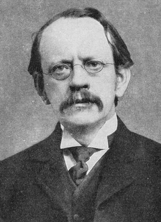
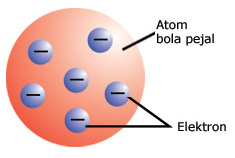

Setelah pernyataan Dalton mengenai Atom, atom diteliti kembali oleh
seorang ilmuan bernama Sir Joseph John Thomson atu yang lebih dikenal
sebagai J.J. Thomson.

Joseph John Thomson
Thomson kemudian mengemukakan Model atau Teori Atom Thomson. Model atom
Thomson dilatar belakangi dengan penemuan elektron pada tahun 1897.
Teori atom yang dikemukakan oleh J.J Thomson menggambarkan atom sebagai
bola masif bermuatan positif yang di dalamnya tersebar elektron sehingga
keseluruhannya bersifat netral.
Teori Atom Thomson Menyatakan:
Atom yang memiliki muatan positif yang homogen berbentuk seperti
bola pejal
Elektron bermuatan negatif tersebar didalamnya
Model Atom Thomson

Kelebihan Teori Atom Thomson:
Mampu menjelaskan adanya partikel yang lebih kecil dari atom yang
disebut dengan subatomic
Mampu menjelaskan sifat listrik atom
Kelemahan Teori Atom Thomson:
Tidak mampu menjelaskan mengenai adanya inti atom
Tidak mampu menjelaskan mengenai fenomena penghaburan partikel alfa
oleh selaput tipis emas yang disampaikan teori atom Rutherford